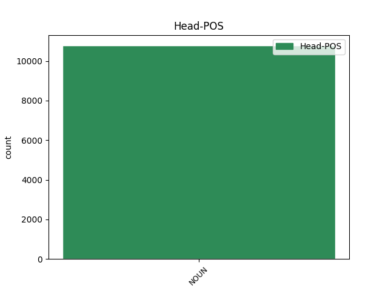
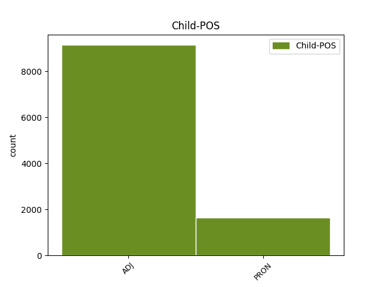

Distribution of features within this leaf



Agreement Rules sorted by frequency.
- When the dependent token is the modifer(mod) of the head token, and the head token is NOUN and the dependent token is ADJ.
1 Mange _ _ _ _ 0 _ _ _
2 muligheter _ _ _ _ 0 _ _ _
3 for _ _ _ _ 0 _ _ _
4 overnatting _ _ _ _ 0 _ _ _
5 i _ _ _ _ 0 _ _ _
6 Torshavn _ _ _ _ 0 _ _ _
7 , _ _ _ _ 0 _ _ _
8 i _ _ _ _ 0 _ _ _
9 flere _ _ _ _ 0 _ _ _
10 prisklasser _ _ _ _ 0 _ _ _
11 , _ _ _ _ 0 _ _ _
12 fra _ _ _ _ 0 _ _ _
13 enkle _ _ _ _ 0 _ _ _
14 gjestehus _ _ _ _ 0 _ _ _
15 til _ _ _ _ 0 _ _ _
16 flotte flott ADJ _ Degree=Pos|Number=Plur 17 mod _ _
17 hoteller hotell NOUN _ Definite=Ind|Gender=Neut|Number=Plur 0 _ _ _
18 . _ _ _ _ 0 _ _ _
1 Vi _ _ _ _ 0 _ _ _
2 er _ _ _ _ 0 _ _ _
3 stolte _ _ _ _ 0 _ _ _
4 av _ _ _ _ 0 _ _ _
5 landet land NOUN _ Definite=Def|Gender=Neut|Number=Sing 0 _ _ _
6 vårt vår PRON _ Gender=Neut|Number=Sing|Poss=Yes|PronType=Prs 5 mod _ _
7 , _ _ _ _ 0 _ _ _
8 og _ _ _ _ 0 _ _ _
9 jeg _ _ _ _ 0 _ _ _
10 vil _ _ _ _ 0 _ _ _
11 kjempe _ _ _ _ 0 _ _ _
12 for _ _ _ _ 0 _ _ _
13 at _ _ _ _ 0 _ _ _
14 ikke _ _ _ _ 0 _ _ _
15 så _ _ _ _ 0 _ _ _
16 mange _ _ _ _ 0 _ _ _
17 flytter _ _ _ _ 0 _ _ _
18 herfra _ _ _ _ 0 _ _ _
19 , _ _ _ _ 0 _ _ _
20 sier _ _ _ _ 0 _ _ _
21 Sunneva _ _ _ _ 0 _ _ _
22 . _ _ _ _ 0 _ _ _
Disagree Examples:
1 Det _ _ _ _ 0 _ _ _
2 er _ _ _ _ 0 _ _ _
3 ovnsbakt _ _ _ _ 0 _ _ _
4 piggvar _ _ _ _ 0 _ _ _
5 dandert _ _ _ _ 0 _ _ _
6 med _ _ _ _ 0 _ _ _
7 ingefærmarinert ingefærmarinere ADJ _ Definite=Ind|Number=Sing|VerbForm=Part 8 mod _ _
8 klasetomatbåter klasetomatbåt NOUN _ Definite=Ind|Gender=Masc|Number=Plur 0 _ _ _
9 , _ _ _ _ 0 _ _ _
10 blomkålpuré _ _ _ _ 0 _ _ _
11 drysset _ _ _ _ 0 _ _ _
12 med _ _ _ _ 0 _ _ _
13 finhakket _ _ _ _ 0 _ _ _
14 gressløk _ _ _ _ 0 _ _ _
15 , _ _ _ _ 0 _ _ _
16 og _ _ _ _ 0 _ _ _
17 fransk _ _ _ _ 0 _ _ _
18 smørsaus _ _ _ _ 0 _ _ _
19 med _ _ _ _ 0 _ _ _
20 appelsin _ _ _ _ 0 _ _ _
21 og _ _ _ _ 0 _ _ _
22 fenikkelsmak _ _ _ _ 0 _ _ _
23 . _ _ _ _ 0 _ _ _
1 Litt _ _ _ _ 0 _ _ _
2 forsinket forsinke ADJ _ Definite=Ind|Number=Sing|VerbForm=Part 8 mod _ _
3 , _ _ _ _ 0 _ _ _
4 klokken _ _ _ _ 0 _ _ _
5 20.25 _ _ _ _ 0 _ _ _
6 , _ _ _ _ 0 _ _ _
7 satte _ _ _ _ 0 _ _ _
8 bryllupsgjestene bryllupsgjest NOUN _ Definite=Def|Gender=Masc|Number=Plur 0 _ _ _
9 seg _ _ _ _ 0 _ _ _
10 til _ _ _ _ 0 _ _ _
11 bords _ _ _ _ 0 _ _ _
12 for _ _ _ _ 0 _ _ _
13 å _ _ _ _ 0 _ _ _
14 nyte _ _ _ _ 0 _ _ _
15 gallamiddagen _ _ _ _ 0 _ _ _
16 på _ _ _ _ 0 _ _ _
17 Slottet _ _ _ _ 0 _ _ _
18 . _ _ _ _ 0 _ _ _
1 FN _ _ _ _ 0 _ _ _
2 for _ _ _ _ 0 _ _ _
3 fred _ _ _ _ 0 _ _ _
4 og _ _ _ _ 0 _ _ _
5 utvikling _ _ _ _ 0 _ _ _
6 , _ _ _ _ 0 _ _ _
7 i _ _ _ _ 0 _ _ _
8 de _ _ _ _ 0 _ _ _
9 fattiges fattig ADJ _ Case=Gen|Degree=Pos|Number=Plur 10 mod _ _
10 tjeneste tjeneste NOUN _ Definite=Ind|Gender=Masc|Number=Sing 0 _ _ _
1 Helt _ _ _ _ 0 _ _ _
2 siden _ _ _ _ 0 _ _ _
3 han _ _ _ _ 0 _ _ _
4 tiltrådte _ _ _ _ 0 _ _ _
5 , _ _ _ _ 0 _ _ _
6 har _ _ _ _ 0 _ _ _
7 Kofi _ _ _ _ 0 _ _ _
8 Annan _ _ _ _ 0 _ _ _
9 talt _ _ _ _ 0 _ _ _
10 de _ _ _ _ 0 _ _ _
11 fattiges fattig ADJ _ Case=Gen|Degree=Pos|Number=Plur 12 mod _ _
12 sak sak NOUN _ Definite=Ind|Gender=Fem|Number=Sing 0 _ _ _
13 . _ _ _ _ 0 _ _ _
1 Det _ _ _ _ 0 _ _ _
2 finnes _ _ _ _ 0 _ _ _
3 fattige _ _ _ _ 0 _ _ _
4 i _ _ _ _ 0 _ _ _
5 alle _ _ _ _ 0 _ _ _
6 land _ _ _ _ 0 _ _ _
7 , _ _ _ _ 0 _ _ _
8 men _ _ _ _ 0 _ _ _
9 det _ _ _ _ 0 _ _ _
10 er _ _ _ _ 0 _ _ _
11 særlig særlig ADJ _ Definite=Ind|Degree=Pos|Gender=Neut|Number=Sing 13 mod _ _
12 fattige _ _ _ _ 0 _ _ _
13 mennesker menneske NOUN _ Definite=Ind|Gender=Neut|Number=Plur 0 _ _ _
14 i _ _ _ _ 0 _ _ _
15 fattige _ _ _ _ 0 _ _ _
16 land _ _ _ _ 0 _ _ _
17 FN _ _ _ _ 0 _ _ _
18 konsentrerer _ _ _ _ 0 _ _ _
19 seg _ _ _ _ 0 _ _ _
20 om _ _ _ _ 0 _ _ _
21 . _ _ _ _ 0 _ _ _